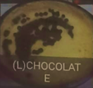
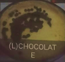
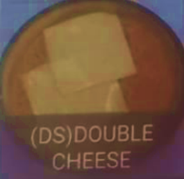
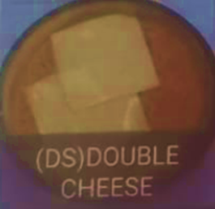
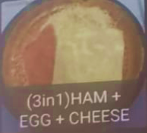
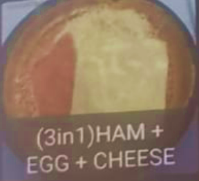

Pancake Takoyaki
Nanyang Polytechnic Block P
South Canteen Level 2
Home page
Stall information
Pancake Takoyaki sells both pancakes and takoyaki. For its fluffy pancakes, there is a wide variety of different flavours choosable, ranging from peanut, coconut to even chicken floss!
Takoyaki or "octopus balls" is a ball-shaped Japanese snack made of a wheat flour-based batter and cooked in a special molded pan. It is typically filled with octopus, chicken ham, prawn, crab meat, Topped with tankatsu sauce and sprinkled with dried fish. Note: a minimum of 3 pieces needed per purchase of takoyaki
Furthermore, you can also mix and match these different flavours for both pancake and takoyaki to determine the best combinations! Come find your Favourite!
Recommended pancakes:
Get it now while all pancakes are 10% off!
Chocolate[L] - $1.50


Double Cheese (DS) - $1.80


Ham + Egg + Cheese - $2.50

